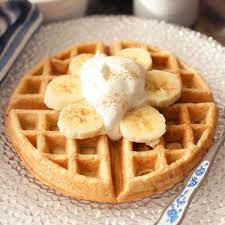

Waffles prep

Description
Golden brown and fluffy waffles, perfect for a sweet or savory breakfast.
Ingredients for Waffles:
- 1 cup all-purpose flour
- 2 tablespoons sugar
- 1 teaspoon baking powder
- 1/4 teaspoon baking soda
- 1/4 teaspoon salt
- 1 egg
- 1 cup milk
- 1/4 cup vegetable oil
Procedure
- Whisk together the dry ingredients in a bowl.
- Whisk together the wet ingredients in a separate bowl.
- Pour the wet ingredients into the dry ingredients and whisk until just combined.
- Heat a waffle iron and grease it with butter or cooking spray.
- Pour the batter onto the hot waffle iron and cook for 2-3 minutes per side, or until golden brown and cooked through.
- Serve with your favorite toppings, such as syrup, butter, fruit, or whipped cream.